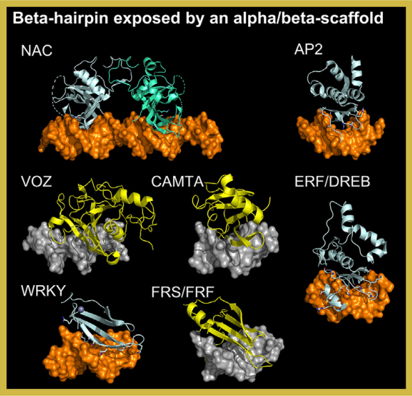

Transcription factors (TFs) in this superclass feature a DNA-binding domain (DBD) composed of an alpha/beta-structured scaffold.
A beta-hairpin inserts into the DNA major groove, serving as the primary DNA-contacting element. This structural motif
is shared across diverse TF families, enabling sequence-specific DNA recognition.
In TFClass, this superclass includes the GCM domain factors, originally identified as a mammal-specific family.
However, five additional plant-specific families have been incorporated: NAC, VOZ, CAMTA, WRKY, and FRS/FRF.
Structural analyses, including crystallographic studies and AlphaFold2 predictions, reveal striking similarities in the DNA-binding modes
of these families, supporting their classification within this superclass
[src].
